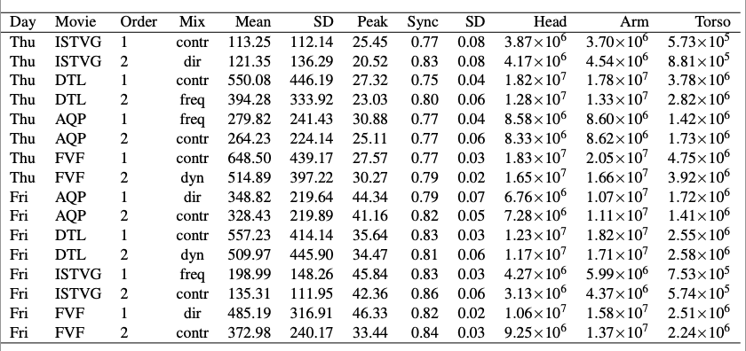

Examining the Impact of Audio Features on Emotional Responses and Immersion in Film.
EMORSION is an exploratory study that investigates the relationship between film audio design and audience perception, with a focus on emotional and immersive responses.
It was conducted using scenes from four films from the genres of horror and drama : two mainstream and two independent productions, selected to reflect the current range of contemporary cinema.
The clips of the movies analysed in this experimental study were from: Ford vs Ferrari (FvF), I saw the TV glow (ISTVG),Desicion to leave (DTL) and A quiet place (AQP).
📊 Results
The results and analysis from the movement, sensor and self-report questionnaire can be found here.

🧪 Audio Stems
We provide examples of the different mixes used in the experiment. This examples were used just for the purpouse of research
The original mix of each clip had 8 tracks. However, not all the tracks were isolated (e.g., just music, voice, sound effects).
Detailed information on the changes for ISTVG is presented in the image below. It is important to mention that all the audio modifications were performed using Reaper.
Mainly using the next plug-ins: ReaEQ, ReaXcomp, ReaPitch (Cockos)
Frequency: Pitch shift. Voices present different EQ's.
Dynamics: Up and down levels in different sound effects.
Directivity: Changes of sound effects, we occupied the original stems, trim them and change the directionality in certain times of the clip.
Original: The stems of this production were 8 audio tracks. That included the left(L), center(C), right(R),subwoofer (LFE),right surround (RS), left surround (LS), back surround left (BSL), back surround right (BSR).